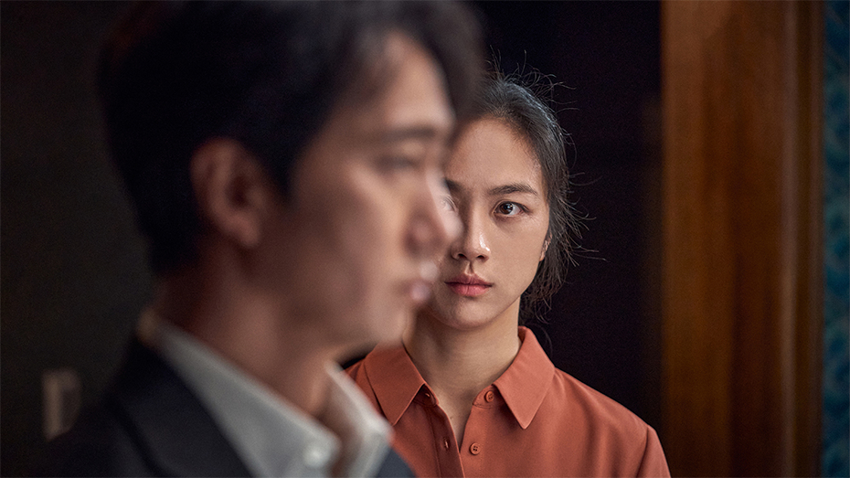

“영화제는 멈춘 적이 있었을지라도 시네마는 한 번도 멈춘 적이 없다. 뤼미에르 형제의 영화에서 기차가 달린 이후로 수백년동안 지구상에서 단 한 번도 이 시네마는 멈춘 적이 없었다.” 지난 해 칸 국제영화제 개막식에 ‘깜짝’ 등장한 봉준호 감독은 확신에 찬 어조로 이렇게 말했다. 그리고 한국어로 힘차게 영화제의 선언을 외쳤다. 멈추지 않는 영화의 역사 속에서, 영화의 위대한 힘에 공감하는 많은 필름메이커, 아티스트, 그리고 관객의 염원을 담아 제75회 칸국제영화제의 막이 오른다. 3년 만에 ‘페스티벌’의 형태를 제대로 갖춰 열리는 세계 최고의 영화 축제다. 다시 기지개를 켜는 영화의 항해에 화제성과 주제성, 작품성을 고루 갖춘 한국 영화들이 미치는 영향은 꽤 의미심장하다.
“한국의 예술을 사랑한다. 영화를 사랑한다.
지금 정말 아름다운 작품들이 한국에서 만들어지고 있다.”
“얼마 전 신작 <수퍼 소닉2> 개봉을 앞두고 진행된 인터뷰에서 배우 짐 캐리는 “한국의 예술을 사랑한다. 영화를 사랑한다. 지금 정말 아름다운 작품들이 한국에서 만들어지고 있다”며 거듭 한국 작품에 관심을 표했다. 뿐만이 아니다. 이제 해외 배우와 감독, 영화 관계자들은 ‘먼저’ 한국 콘텐츠에 대해 언급하며 열정적으로 호응한다. 사실 최근 줌으로 해외 감독과 배우들을 다양하게 만나면서 분위기가 달라진 것을 몸소 체감하고 있다. 십수 년 전 내게 “봉준호 감독의 팬”이라며, “만약 직접 만나면 너무 좋아 그 자리에서 울 것 같다”고 말하던 캐나다인이 떠올랐다. 그는 <괴물>과 <살인의 추억> DVD를 소장하고 있고, 봉준호로 입문해 한국 영화에 관심을 넓혀가고 있다고 했다. 그때 그는 한국 콘텐츠를 ‘마니아’로서 소비하던 팬이었다. ‘Bong Joon-ho’ 이름이 프린트된 티셔츠를 입고, 한국 영화를 소개하는 파리한국영화제에 ‘찾아와’ 길게 줄을 서던, 소수의 시네필들은 이미 그렇게 적지 않았다.
하지만 지금 한국 콘텐츠를 소비하는 이들의 양상은 사뭇 다르다. <오징어 게임>에 열광하는 이들 중 <괴물>과 <살인의 추억>을 본 이들은 많지 않다. 콘텐츠는 그렇게 순서를 정해서 차곡차곡 소비되지 않는다. <오징어 게임>을 한국 콘텐츠로 알고 봤다기보다, 보니 재미있었고, 재밌는 걸 봤는데 그게 한국 콘텐츠였다는 순서가 맞다. 바꾸어 말하면 그들에게 이정재와 정호연이 ‘한국’ 배우라는 건 크게 중요하지 않다. 더 중요한 건 이정재와 정호연이 그들에게 지금 전 세계 그 어떤 배우보다 신선하고 멋진 스타라는 점이다. K-팝과 K-드라마, K-무비를 아우르는 이른바 K-콘텐츠는 한국의 문화 콘텐츠에 쏠린 이 일련의 흐름을 설명해줄 용어이자, 퀄리티 높고 독특하고 흥미로운 작품을 보증하는 인증 마크가 됐다.
‘한국 영화’가 글로벌하게 인식된 건 영화 <기생충>을 향한 열광에서 구체화되었다고 해도 과언이 아니다. <기생충>은 한국 영화가 아시아 시장에서만 통용되던 ‘한류’를 넘어서서 서구권까지 그 영향력을 확장해 대중의 호응을 본격적으로 획득한 매우 독보적인 ‘사건’이다. <기생충>을 접한 이들에게 바로 이듬해 <미나리>의 윤여정이라는 매력적인 배우가 도착했고, 기세를 놓치지 않고 <오징어 게임>의 열풍이 휩쓸었다. 주목받는 한국 콘텐츠를 통해 한국 배우의 위상도 달라졌다. 이정재, 정호연에 이어 올해 에미상에는 <파친코>로 주목받은 한국 배우 김민하의 수상이 점쳐진다.

"K-팝과 K-드라마, K-무비를 아우르는 이른바 K-콘텐츠는 한국의 문화 콘텐츠에 쏠린 이 일련의 흐름을 설명해줄 용어이자, 퀄리티 높고 독특하고 흥미로운 작품을 보증하는 인증 마크가 됐다."
콘텐츠 시장의 움직임에서도 ‘한국’이 가지는 신선함의 지수는 꽤 높다. 일례로 브래드 피트가 설립한 A24 같은 지금 가장 핫한 저예산 작품을 만들어내는 제작사가 한국 정서를 바탕으로 한 <미나리> 같은 작품을 내놓는가 하면, OTT 거대 기업인 애플 TV는 자신들의 공격적인 제작 활동을 보여줄 오리지널 시리즈로 가장 한국적인 역사에 기반한 콘텐츠인 <파친코>를 만들면서 무려 1000억 원을 투입하는 세상이다. 다양성을 화두로 하는 인디 시장부터 자본이 가장 집약된 규모의 제작 라인까지 광범위하게 적용되고 관심을 모으는 소재가 지금은 K-콘텐츠다.
물론 봉준호 감독이 <기생충>으로 골든글로브를 수상하며 언급한 ‘자막의 장벽’은 여전히 존재한다. 한국어는 영어가 아니고 그래서 낯선 건 당연하다. 그런데 변화한 것이 있다. 이렇게 장벽은 그대로인데, 불과 2년 사이 그 장벽 앞에 선 이들의 마음이 눈에 띌 정도로 확연히 달라졌다는 점이다. 한국 콘텐츠는 새롭고 흥미롭다는 걸 춤과 노래로, 드라마로, 영화로 학습한 전 세계 관객과 시청자들은 다들 이제 기꺼이 장벽을 읽고 해석하여 넘고자 한다. 그 장벽을 넘는 게 오히려 이들에게는 흥미로운 지점이다. 한국어라면 욕설(캐릭터들이 사용하는 언어니까!)까지 암기하는 세상이다.
이렇게 Korean Wave, 한류가 문화 콘텐츠 시장의 거대한 흐름이자 주도적 위치를 차지한 분위기에서, 올해 칸영화제의 라인업을 지켜보는 건 사뭇 흥미롭다. 지난 2년간 팬데믹 상황 때문에 ‘칸 라인업’ 발표만 하던 칸영화제가 올해에는 코로나 이전과 같은 형식으로 정상 개최된다는 점도 의미심장하다. 잠잠하게 침묵하다가 오랜만에 페스티벌로 형식을 갖춘 채 기지개를 켜는, 말 그대로 그 어느 때보다 초청된 프리미어 상영작 한 편 한 편에 전 세계의 관심이 집중되는 시기인 것이다.
한국 영화가 100년의 역사 반환점을 돌아 101년이 되는 해인 2019년에 제작된 <기생충>은 새로운 영화적 형식과 완성도, 문제의식과 장르적 쾌감으로 영화제 이슈를 선점해 잠잠하던 칸을 들썩이게 했다. 그렇게 칸이 제일 먼저 봉준호라는 전 세계에서 통용되는 시네아스트의 이름을 강렬하게 호명했고, 이후 올해 칸에 초청된 한국 영화는 세 편이다. 먼저 경쟁부문에 박찬욱 감독의 <헤어질 결심>과 고레에다 히로카즈 감독의 <브로커>가, 미드나잇 스크리닝 부문에 배우 이정재가 처음으로 연출한 <헌트>가 초청됐다.
"배우, 스태프, 감독과의 글로벌한 협업이라는 판이 확보된 ‘산업적 바탕’이 칸에서 어떤 결과를 보여줄지, 한국 영화 100년의 역사 이후 한국 영화가 어떤 방향성으로 작용할지 사뭇 기대가 되는 지점이다."